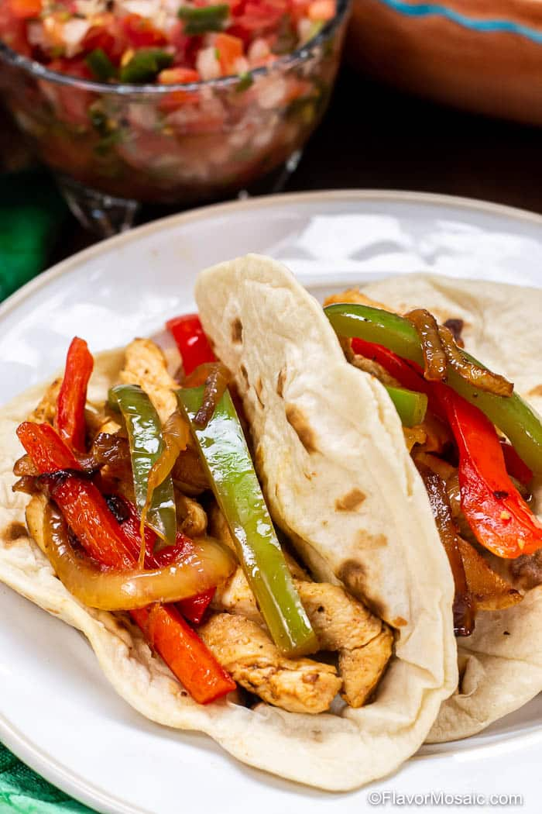

Fajitas

Sizzling Chicken Fajitas
Making homemade fajitas are a lot easier than you might think, and you probably already have the ingredients in your kitchen. Brighten up this dish with a mixture of red, orange, yellow, and green peppers. Top with your favorite garnishes. We use sour cream and avocado.
Ingredients
- 1 pound boneless chicken breast, cut into strips
- 2 tablespoons olive oil
- 1 package fajita seasoning
- 2 bell peppers, sliced
- 1 onion, thinly sliced
- 1 avocado, thinly sliced
- 8 flour tortillas, fajita size
Steps
- Heat 2 tablespoons olive oil in a large skillet over medium heat. Add pepper, onion and chicken. Stir in fajita seasoning and cook, stirring occasionally, about 8 to 10 minutes, or until chicken is thoroughly cooked.
- Warm tortillas on medium-high on a griddle.
- Add chicken fajita mix to tortillas and add sour cream and sliced avocado to taste.